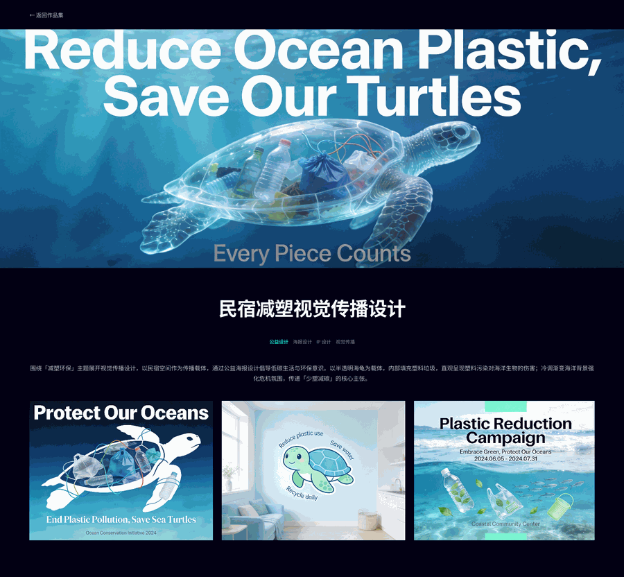
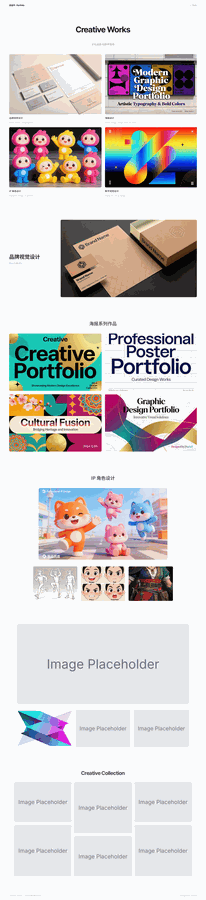
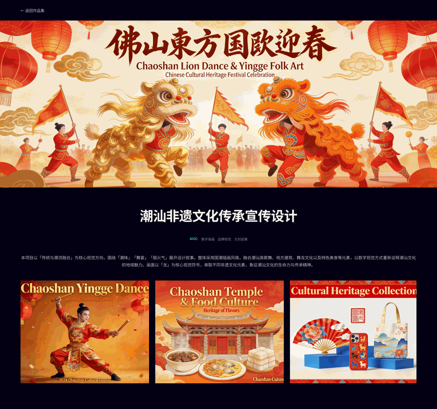
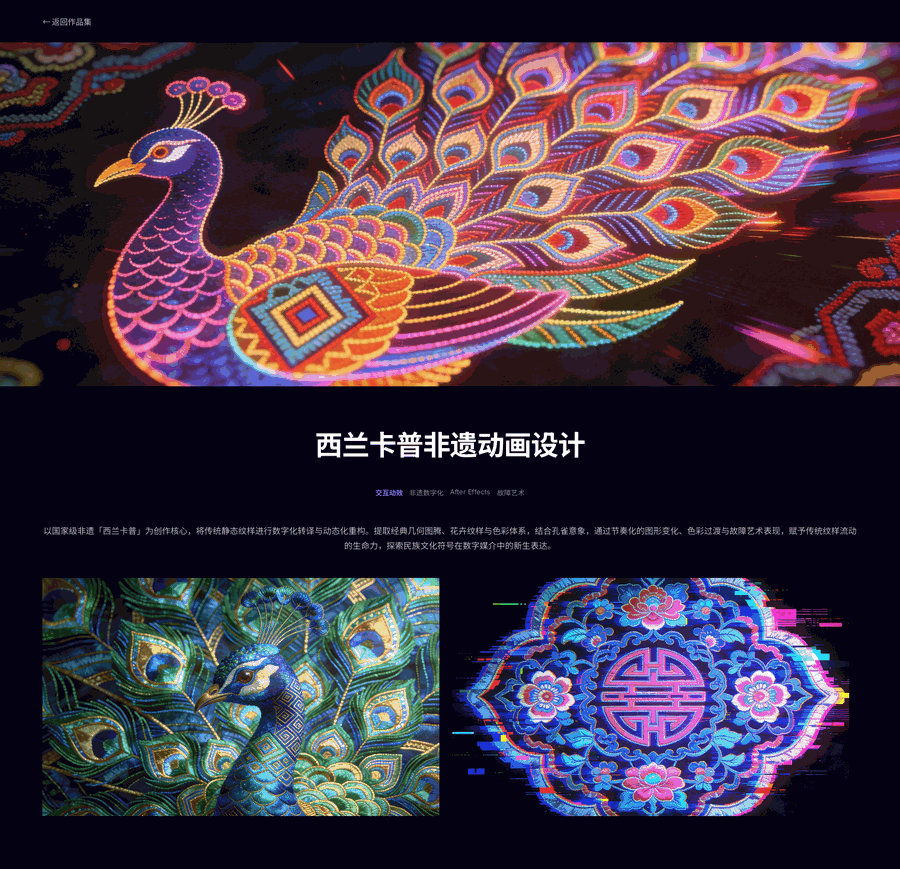
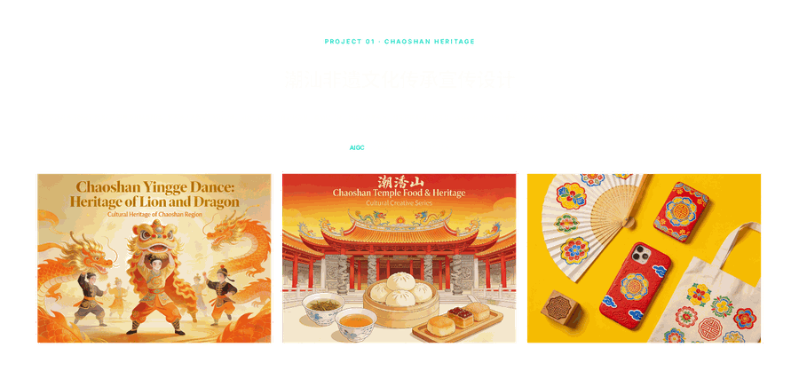
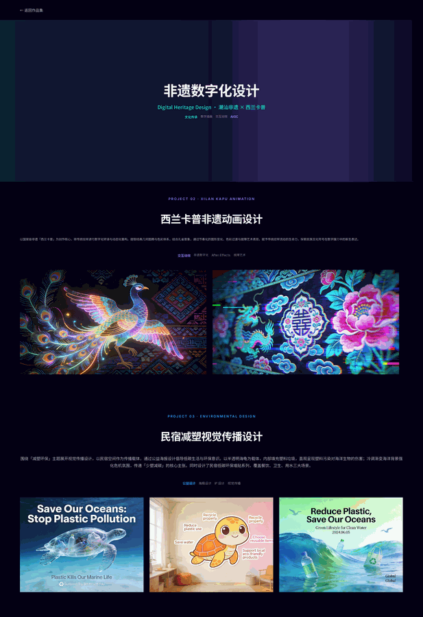

PART.04 · Cultural & Digital Vision
文化创意与数字视觉
本合集聚焦「文化符号的当代转译」，涵盖三个方向：以海洋保护为内核的公益视觉传播、融合潮汕英歌舞与西兰卡普刺绣的非遗文化数字设计，以及面向年轻化传播的非遗数字化探索。各项目在角色、插画、动效与数字视觉上形成方法论的呼应，呈现从文化提取到数字表达再到传播落地的完整能力。

民宿减塑视觉传播设计
以海洋保护为核心的公益视觉传播项目。围绕「民宿减塑」主题，设计系列公益海报、IP 形象与视觉传播物料，通过温暖的视觉语言与有力的信息传达，呼吁民宿行业与旅客共同参与减塑行动，守护海洋生态。
设计亮点
视觉叙事
以海洋生物视角构建情感叙事，通过对比与隐喻手法直观呈现塑料污染对海洋生态的影响。
IP 形象
设计海洋主题 IP 角色，作为减塑行动的视觉代言人，增强传播的记忆点与亲和力。
传播延展
主视觉延展至海报、宣传册、社交媒体与民宿空间物料，形成线上线下联动的传播矩阵。
作品展示



非遗文化设计
将两项国家级非遗项目——潮汕英歌舞与土家族西兰卡普——通过数字媒介进行当代转译与视觉重构。一侧是以「传统与潮流融合」为核心的国潮插画风格，围绕潮汕英歌舞、舞狮、地方建筑展开叙事；另一侧是将传统静态纹样进行动态化重构，结合孔雀意象与故障艺术表现，赋予织锦纹样流动的生命力。两者共同探索民族文化符号在数字时代的新生表达。
01 潮汕非遗文化传承
Chaoshan Lion Dance & Yingge Folk Art
以「传统与潮流融合」为核心视觉方向，围绕「潮味」「舞宴」「烟火气」展开设计叙事。整体采用国潮插画风格，融合潮汕英歌舞、地方建筑、舞龙文化以及特色美食等元素，以数字视觉方式重新诠释潮汕文化的地域魅力。画面以「龙」为核心视觉符号，串联不同非遗文化元素，象征潮汕文化的生命力与传承精神。
文化符号
提取英歌舞脸谱、舞龙动作、潮汕建筑飞檐与红头船等地方符号，构建高辨识度的视觉语言。
色彩系统
以朱红、鎏金、黛青为主色，营造喜庆热烈的节日氛围，同时保留传统文化的厚重感。
应用延展
主视觉延展至海报、文创周边、社交媒体运营图等多场景，形成统一的品牌传播矩阵。

02 西兰卡普非遗动画
Xilankapu Embroidery & Motion Design以国家级非遗「西兰卡普」为创作核心，将传统静态纹样进行数字化转译与动态化重构。提取经典几何图腾、花卉纹样与色彩体系，结合孔雀意象，通过节奏化的图形变化、色彩过渡与故障艺术表现，赋予传统纹样流动的生命力，探索民族文化符号在数字媒介中的新生表达。
纹样解构
拆解西兰卡普经典纹样，保留几何骨架与吉祥寓意，为动态演绎建立可复用的图形单元。
色彩叙事
以靛蓝、玫红、亮黄等高饱和色彩形成强烈对比，配合流光效果模拟织锦丝线光泽。
动态节奏
通过错帧、故障扫描与波纹扩散等动效，营造传统与未来交织的视觉张力。
非遗数字化设计
将传统文化符号通过数字媒介重新诠释与传播。以非遗文化为创作源泉，运用数字插画、交互动效与 AIGC 技术，让传统纹样、民俗技艺与文化故事在数字时代焕发新的生命力，探索文化传承与创新表达的更多可能。
设计方法
文化提取
深入研究非遗文化的历史脉络与视觉特征，提取具有代表性的符号元素与色彩体系。
数字转译
将传统静态纹样转化为可交互、可动态展示的数字资产，赋予其流动性与延展性。
传播创新
结合社交媒体、动态海报与交互体验，让非遗文化以年轻化、时尚化的方式触达更多受众。